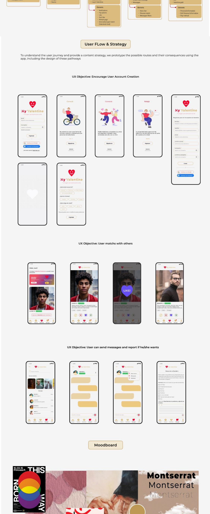
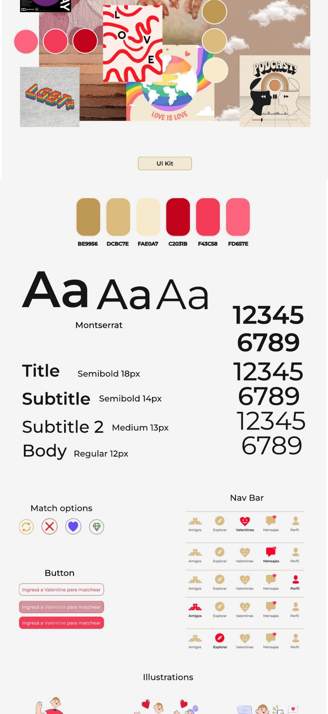
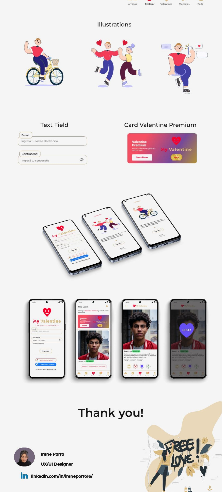

Explore a dating app concept that responds to privacy concerns, unsafe interactions and the discomfort users can feel in digital dating environments.
Case study / Mobile app
A dating app concept centered on safer digital connection.
My Valentine explores a mobile dating experience where trust, privacy and emotional comfort are treated as product requirements, not just brand messages.
UX Research
Mobile App
Privacy
User Flows
Visual Design

UX/UI Designer across research, benchmarking, user journey, information architecture, wireframes, visual design and prototype.
Create a warmer and more reassuring product experience while keeping the core mobile flow familiar and easy to understand.
Story
Trust had to shape the flow before it shaped the visual identity.
The project started from the risks around digital dating: uncertain identity, unwanted contact and limited control over personal information. Those concerns became product requirements rather than a generic promise of safety.
I structured the journey so onboarding, profile setup and matching establish expectations first. Privacy and reporting controls remain available in the flow instead of being hidden in policy copy.
01 / Product Thinking
Designing for confidence before designing for matching.
Instead of treating privacy as a settings page at the end of the experience, the concept frames safety, clarity and user control as key parts of the core journey.
- Mapped user concerns around data, screenshots and profile exposure.
- Defined onboarding and account moments around reassurance and clarity.
- Created a soft visual system to support a more human tone.

02 / Visual system
A warm identity with explicit interaction states.
The UI kit defines typography, color, controls, navigation and match actions as one system. The expressive illustrations carry the brand; the functional controls stay direct and recognizable.

03 / Interface evidence
Show the relationship between the screens, not only the polish.
The final evidence connects account creation, profile browsing, matching, conversation and premium states. Presenting the screens as a sequence makes the product logic easier to assess than repeating a single cover image.

04 / Outcome
A mobile concept where safety decisions are visible in the product.
The case remains a concept, so it does not claim validated safety or behavioral outcomes. Its evidence is the translation of research themes into a connected flow, clear controls and a coherent mobile interface system.